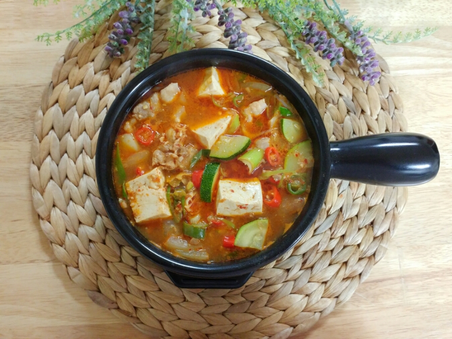

고깃집 된장찌개
재료
: 멸치육수 2컵, 된장1스푼, 쌈장1스푼, 고추가루1/2스푼, 감자1개, 애호박1/3개, 양파1/2개, 두부 반모
각종 야채들을 조그맣게 깍둑썰기를 해 놓습니다.
멸치육수에 된장과 쌈장을 1:1비율로 넣어 잘풀어준 뒤
나머지 채소들을 넣어 보글보글해줍니다.
거품이 올라오면 10분가량 중불에서 올려놓고 두부와 대파 등을 넣어 한소끔 더 끓여 줍니다.